07 · Moderne CPU-Architekturen
Mikrocomputertechnik 3 · Abhängigkeiten, geordnete Bestätigung und Vorhersage
Prof. Dr.-Ing. Daniel Klünder
Von Datenbewegung zu Befehlsparallelität
- Vorlesung 6: DMA entlastet die laufende Kopierbedienung
- Heute: mehrere Befehle innerhalb eines CPU-Kerns bearbeiten
- Unabhängige Arbeit kann Wartezeit überlappen
- Der sichtbare Programmzustand muss weiterhin korrekt bleiben
Voraussetzungen und drei Zeitmodelle
- C-Integer, Arrays und einfache Registeroperationen
- Cachetreffer und Speicherwartezeiten aus Vorlesung 2
- Interrupts und Exceptions aus Vorlesung 3
- M1: fünf skalare Stufen; M2: kurzer Breitenvergleich
- M3: vier Befehle mit festgelegtem Issue und Retire
Vier Schulstunden: Ablauf
| 1 |
Pipeline, Metriken und Ressourcen: 35 min |
Aufgabe 1: 10 min |
| 2 |
Abhängigkeiten, Renaming und Reihenfolge: 30 min |
Aufgaben 2–3: 15 min |
| 3 |
Bestätigung, Sprünge und Vorhersage: 30 min |
Aufgabe 4: 15 min |
| 4 |
Spekulation und Compiler: 15 min |
Aufgaben 5–6: 15 min; Quiz: 15 min |
Befehlssatz und Mikroarchitektur trennen
| ISA |
add berechnet ein Registerergebnis |
| Mikroarchitektur |
eine oder mehrere Recheneinheiten |
| Beobachtung |
Laufzeit eines bestimmten Programms |
Gleicher Befehlssatz bedeutet nicht gleiche Taktzahl.
Was Load und Add bedeuten
RV32I-Lehrfolge; s1 zeigt auf ein gültiges ausgerichtetes Wort:
lw t0, 0(s1)
add t1, t0, t2
Bei Speicherwert \(10\) und t2 \(=1\): t0 \(=10\), danach t1 \(=11\).
Fünf Stufen mit eigenen Aufgaben
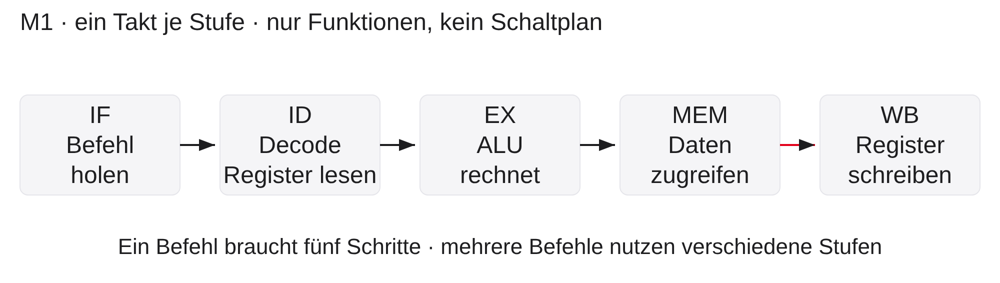
M1: höchstens ein neuer Befehl je Takt; Stufen verschiedener Befehle überlappen.
Überlappung ist bereits Parallelität
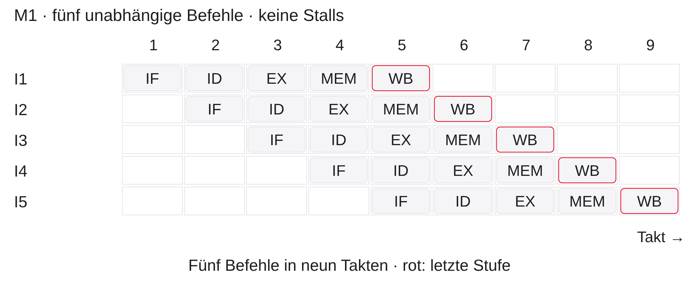
M1: fünf unabhängige Befehle, keine Wartezyklen.
Das kurze Fenster enthält Füllen und Leeren
Für \(N\) unabhängige Befehle und \(k\) gleich lange Stufen in M1:
\[
C=N+k-1
\]
Bei \(N=5\), \(k=5\): \(C=9\) Takte, nicht fünf.
Bei \(N=100\): \(C=104\) Takte.
Forwarding verkürzt Warten, nicht die Abhängigkeit
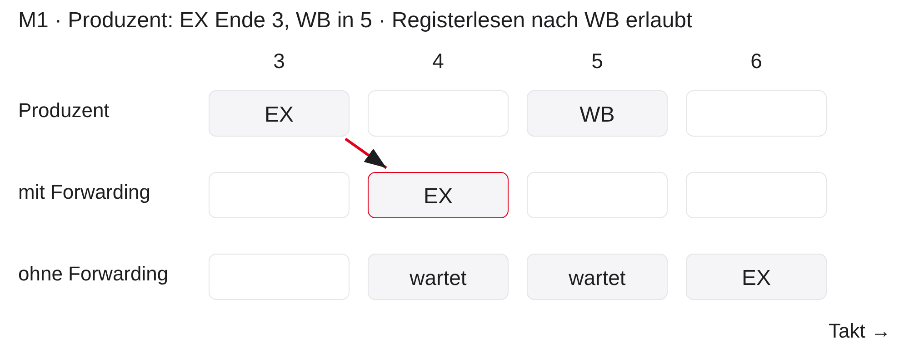
M1: Registerschreiben und anschließendes Lesen im selben Takt erlaubt.
IPC und CPI brauchen dieselbe Zählbasis
Retired ISA-Befehle \(N>0\), Core-Takte \(C>0\), dasselbe Fenster:
\[
\mathrm{IPC}=\frac{N}{C},\qquad
\mathrm{CPI}=\frac{C}{N}=\frac{1}{\mathrm{IPC}}
\]
M1 mit fünf Befehlen: IPC \(=5/9\), CPI \(=9/5=1{,}8\).
Höheres IPC muss nicht kürzere Laufzeit bedeuten
Bei konstanter Frequenz \(f\):
\[
T=\frac{N\cdot\mathrm{CPI}}{f}
\]
| A |
\(100\) |
\(1\) |
\(100\) |
| B |
\(150\) |
\(0{,}8\) |
\(120\) |
Bei \(100\) MHz: \(1\,\mu\)s gegenüber \(1{,}2\,\mu\)s.
Mehr Takt und mehr Breite kosten Energie
Vereinfachte dynamische Leistung:
\[
P_{\mathrm{dyn}}\approx\alpha C_{\mathrm{eff}}V^2f
\]
Bei festem \(\alpha,C_{\mathrm{eff}}\): \(1{,}5\)-facher Takt und \(1{,}1\)-fache Spannung ergeben Faktor \(1{,}815\).
Leckleistung und zusätzliche Hardware sind getrennt zu betrachten.
ILP ist verfügbare Unabhängigkeit
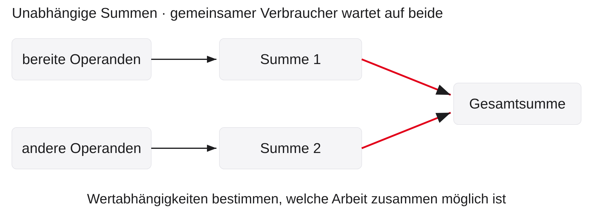
Bereite Operanden und passende Ressourcen bestimmen den möglichen Start.
RAW: Der Leser braucht den erzeugten Wert
RISC-V-Lehrfolge A–D, zunächst A und B:
lw t0, 0(s1) # A
add t1, t0, t2 # B
Bei Speicherwert \(10\) und t2 \(=1\) muss B den Wert \(10\) verwenden.
WAR: Der ältere Leser braucht die alte Version
add t1, t0, t2 # B liest t0
sub t0, t4, t5 # C schreibt neues t0
B braucht den Loadwert \(10\); C erzeugt aus \(8-3\) den neuen Wert \(5\).
WAW: Der jüngere Schreiber bestimmt den Endwert
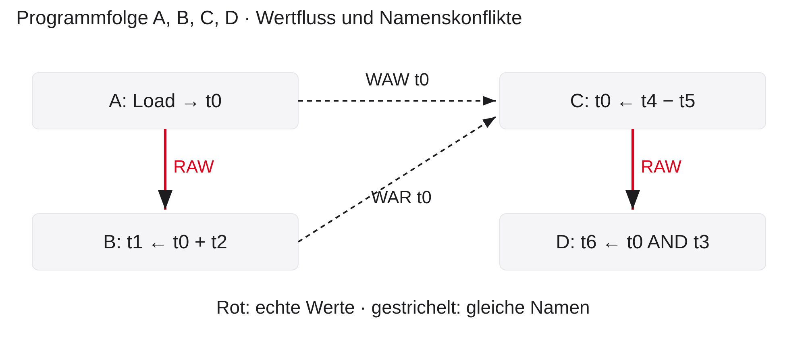
A lädt t0 \(=10\), C schreibt später t0 \(=5\).
Superskalarität beschreibt Breite
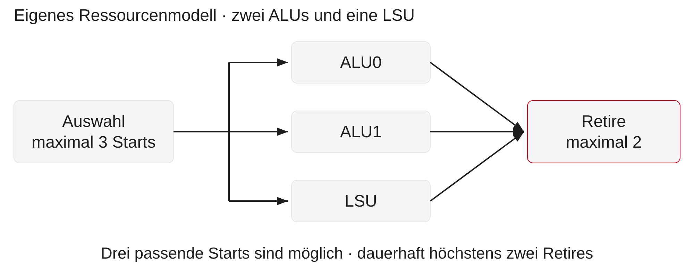
Mehrere Starts pro Takt setzen passende Befehle und Ressourcen voraus.
Vier Befehle: breit starten und breit bestätigen
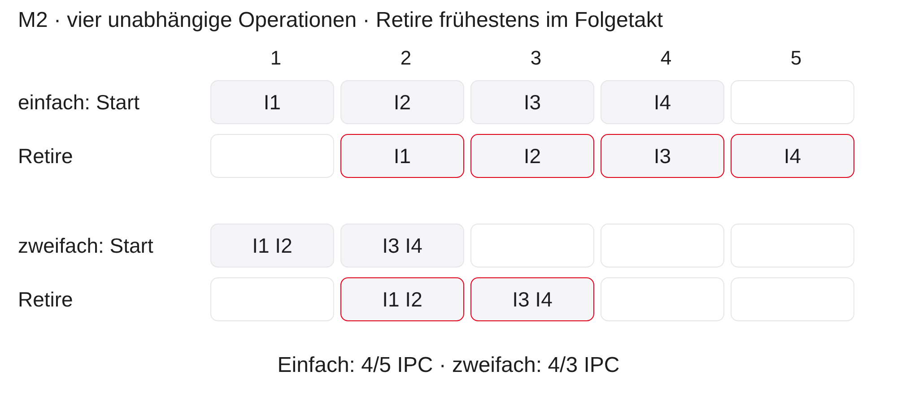
M2: Ergebnis am Starttaktende, Retire frühestens im Folgetakt.
Latenz und Initiationsintervall sind verschieden
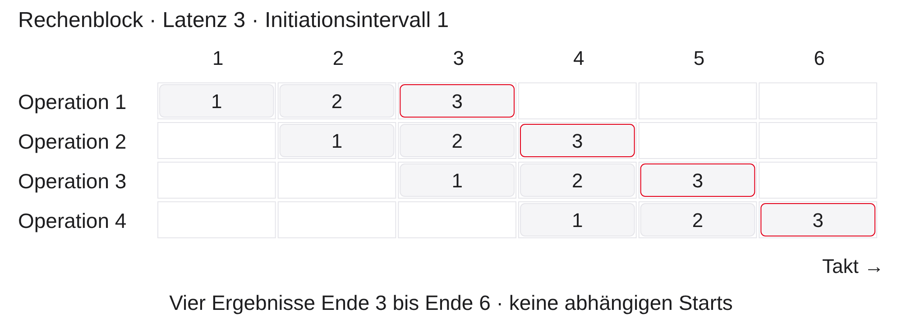
Lehrblock: Latenz \(3\) Takte, neuer Start alle \(1\) Takt.
Fetch-Bytes sind keine feste Befehlszahl
- \(16\) vollständig ausgerichtete Bytes: vier 32-Bit-Befehle
- Mit nur 16-Bit-Befehlen wären es acht
- Mischungen und Grenzen verändern die Aufteilung
- Decode-, Issue- und Retire-Breite bleiben getrennte Limits
Out-of-Order ändert die Startreihenfolge
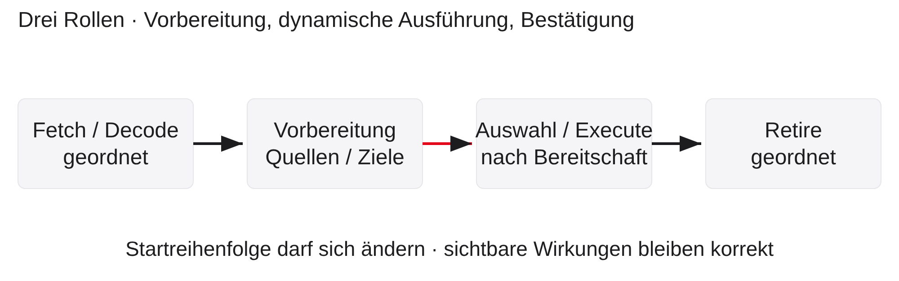
Ein Kern mit Issue-Breite eins kann bereits Out-of-Order arbeiten.
Architekturregister und physische Versionen
- RV32I: \(32\) sichtbare Integernamen;
x0 ist fest null
- Physische Register speichern interne Versionen
- Eine Abbildung verbindet Namen und aktuelle Version
- Mehr interne Plätze ändern den sichtbaren Befehlssatz nicht
Renaming: Quellen festhalten, neues Ziel vergeben
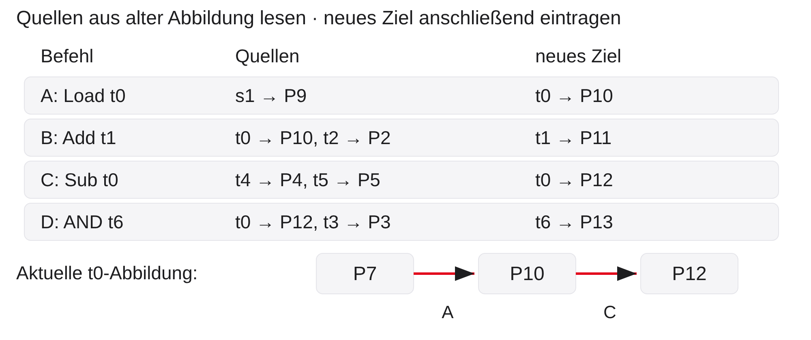
Start: t0 \(\mapsto\) P7; freie Ziele P10, P11, P12, P13.
Die aktuelle Abbildung ersetzt keinen alten Quelltag
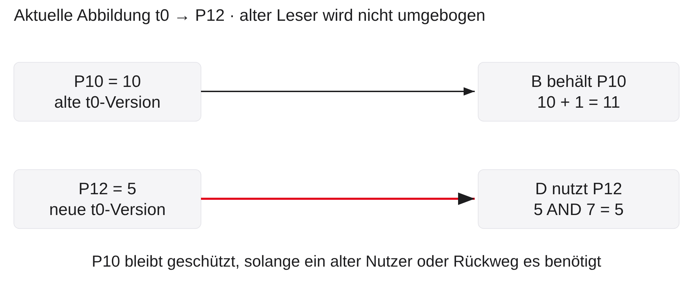
B berechnet \(10+1=11\); D berechnet \(5\ \mathrm{AND}\ 7=5\).
Bereit heißt noch nicht ausgewählt
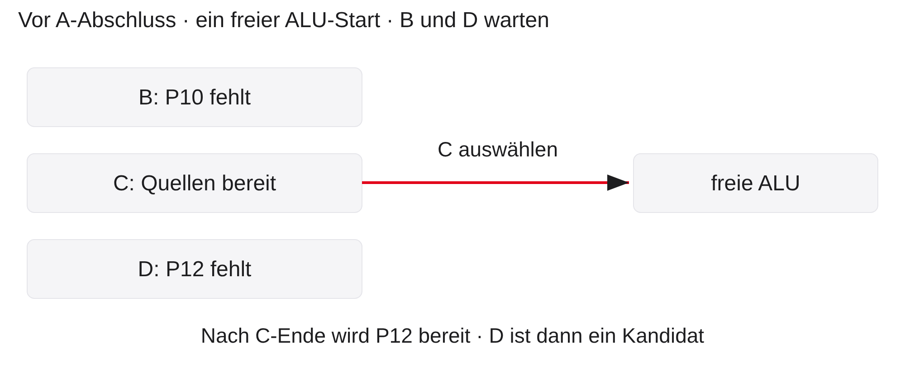
Operanden, freie Einheit, Port und Startbudget gemeinsam prüfen.
Ein festes Modell für den Reihenfolgevergleich
M3 beginnt beim ersten Issue; A–D sind bereits dekodiert und umbenannt.
| Issue |
maximal \(1\) je Takt |
| Einheiten |
eine ALU, eine LSU |
| A: Load |
Ergebnis Ende Takt \(4\) |
| übrige Operationen |
Ergebnis Ende ihres Starttakts |
| Retire |
maximal \(2\), geordnet, frühestens im Folgetakt |
In-Order: B blockiert die jüngeren Starts
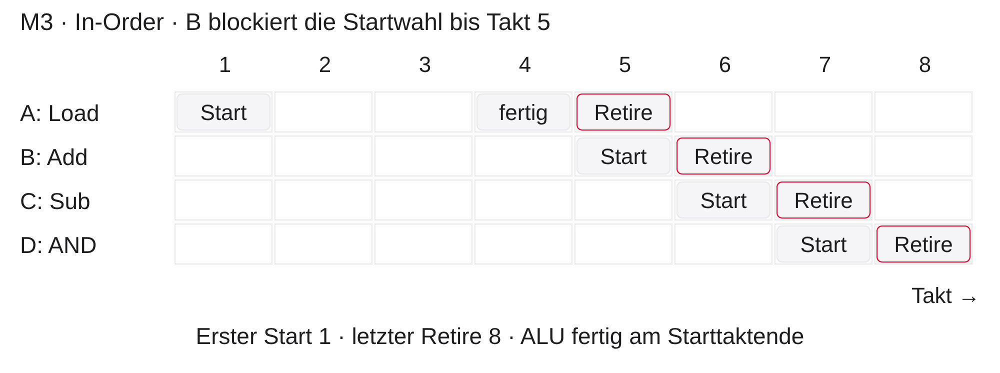
Fenster: erster Start in Takt \(1\) bis letzter Retire in Takt \(8\).
Out-of-Order: C und D nutzen die Wartezeit
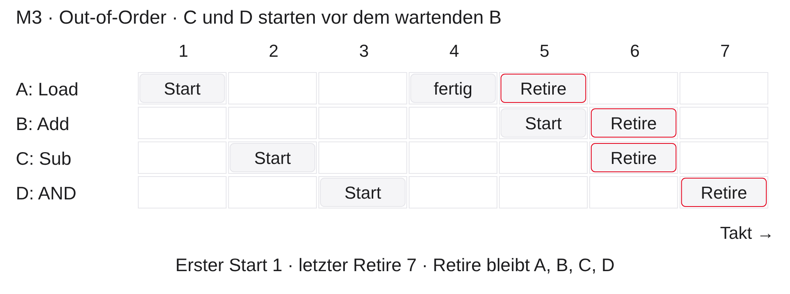
Startreihenfolge A, C, D, B; Bestätigung A, B, C, D.
Die Bilanz hängt am ganzen Fenster
| In-Order |
\(8\) |
\(4/8=0{,}5\) |
\(8/4=2\) |
| Out-of-Order |
\(7\) |
\(4/7\approx0{,}571\) |
\(7/4=1{,}75\) |
Zeitreduktion: \(1-7/8=12{,}5\,\%\).
Beschleunigungsfaktor: \(8/7\approx1{,}143\).
Der ROB verwaltet Ordnung und Status
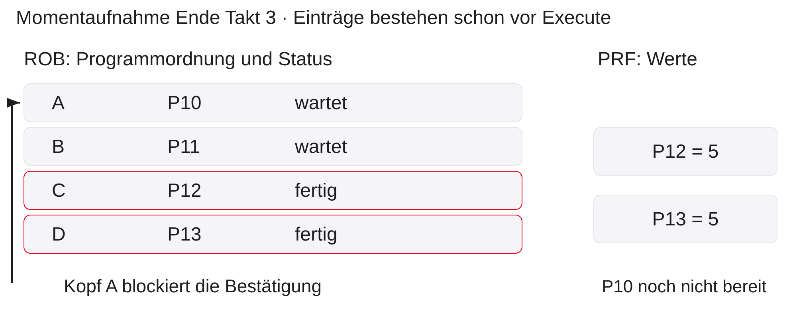
Lehrmodell: Zahlenwerte in der PRF, Status und Reihenfolge im ROB.
Eine Exception bestätigt kein jüngeres Ergebnis
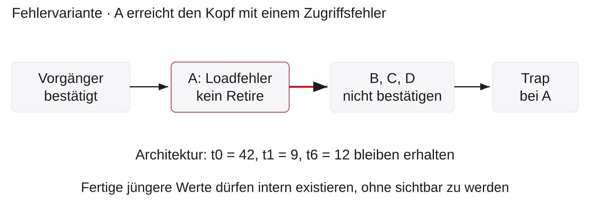
Fehlervariante von M3: A lädt aus einem nicht erlaubten Bereich.
Interrupt und Exception brauchen verschiedene Grenzen
| Exception |
zu einem bestimmten fehlerhaften Befehl |
| Interrupt |
externe Anforderung, Annahme an zulässiger Grenze |
Ein gültiger Zustand ist ein bestätigter Programmanfang, kein Gemisch beliebiger Fertigstellungen.
Ein Store hat mehr als einen Abschlusszeitpunkt
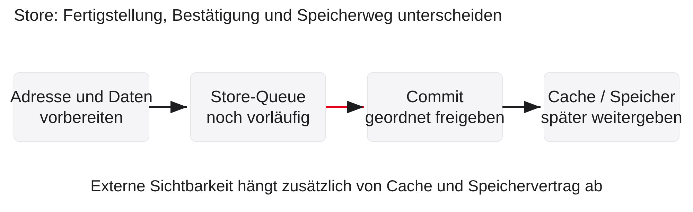
Bestätigen, zum Speicherpfad weitergeben und extern sichtbar werden unterscheiden.
Register-Renaming löst keine Speicheraliase
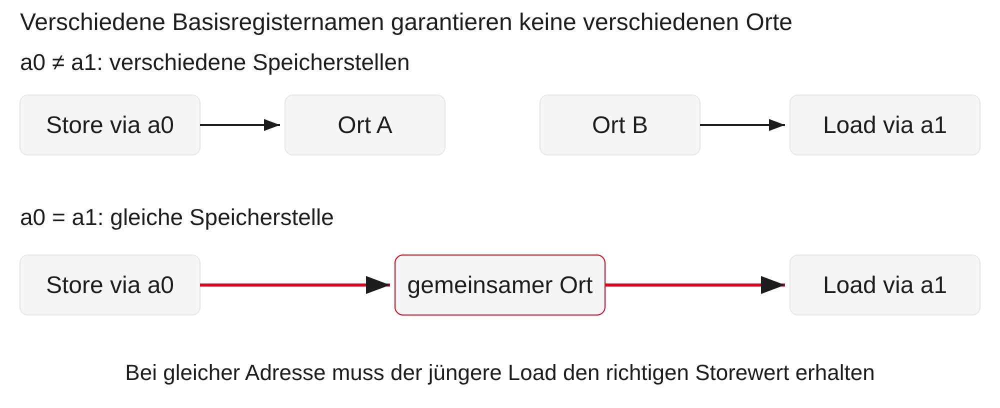
Verschiedene Zeigernamen sind kein Beweis für unabhängige Speicherstellen.
Endliche Puffer begrenzen das Vorziehen
- Ein langer Load kann den Bestätigungskopf blockieren
- ROB und Issue-Queue haben endliche Kapazität
- Register, Ports und Speicherbandbreite bleiben begrenzt
- Unabhängige Arbeit hilft nur innerhalb dieser Grenzen
Ein Sprung braucht Richtung und Ziel
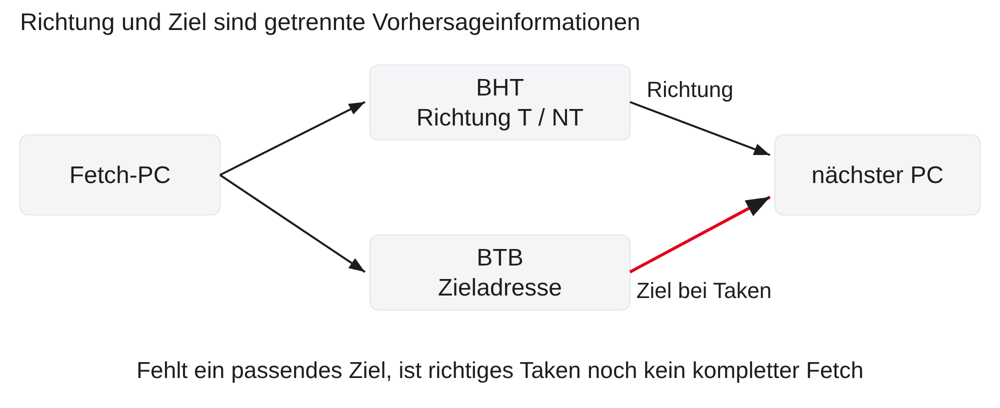
Taken beantwortet „springen?“; ein Target beantwortet „wohin?“.
Eine Fehlvorhersage kostet Wiederanlaufzeit
Penalty ist ein definierter Zusatzaufwand, nicht automatisch die Stufenanzahl.
CPI-Aufschlag und Durchsatzverlust trennen
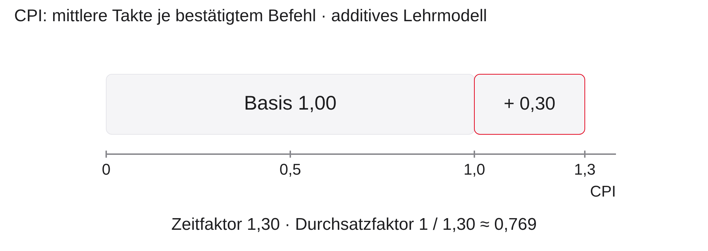
\[
\Delta\mathrm{CPI}=0{,}20\cdot0{,}10\cdot15=0{,}30
\]
Ein Bit merkt nur das letzte Ergebnis
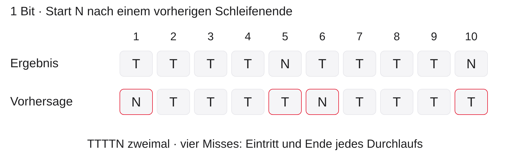
Modell: Vorhersage = gespeichertes letztes Ergebnis.
Zwei Bits erzeugen Hysterese
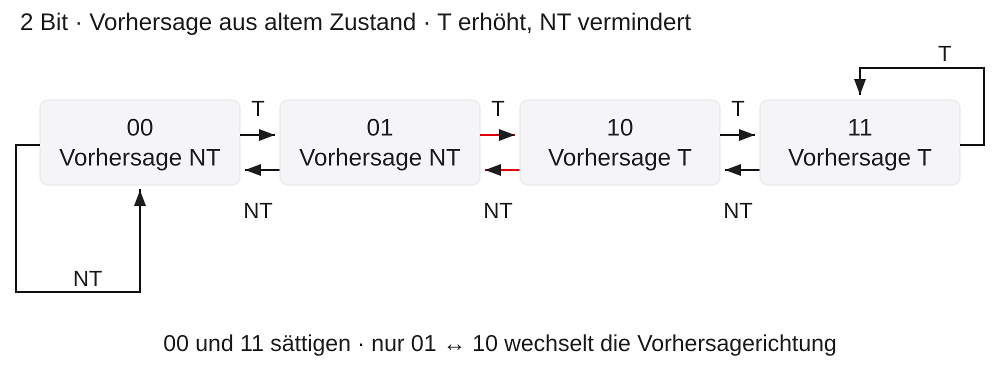
Aus 11 führt ein NT nur nach 10: Vorhersage bleibt T.
Vorhersage zuerst, Update danach
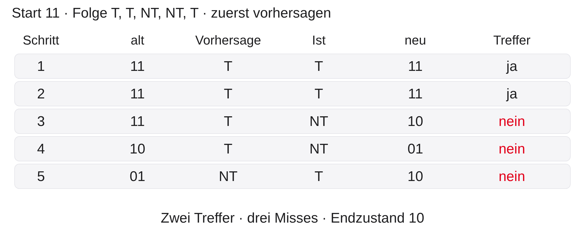
Start 11; Folge T, T, NT, NT, T: zwei Treffer, drei Misses.
Tabellen können sich Einträge teilen
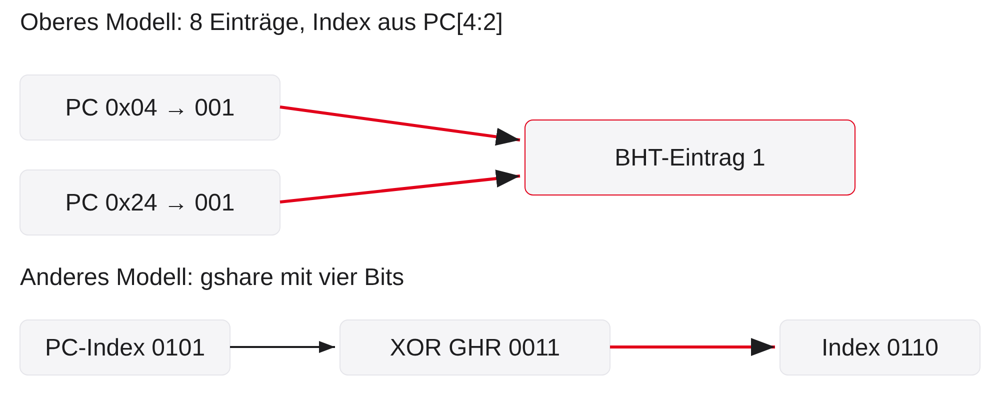
Ein besserer Index beseitigt weder jede Kollision noch jeden falschen Verlauf.
Rollback betrifft nicht jeden internen Zustand
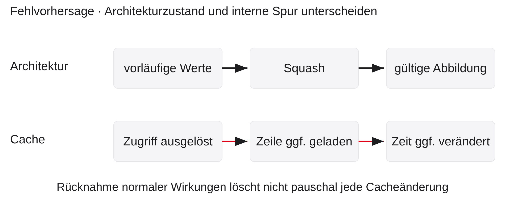
Architektonisch korrekter Kontrollfluss kann interne Nebenwirkungen hinterlassen.
Ein Cache-Seitenkanal benötigt eine Wertkopplung
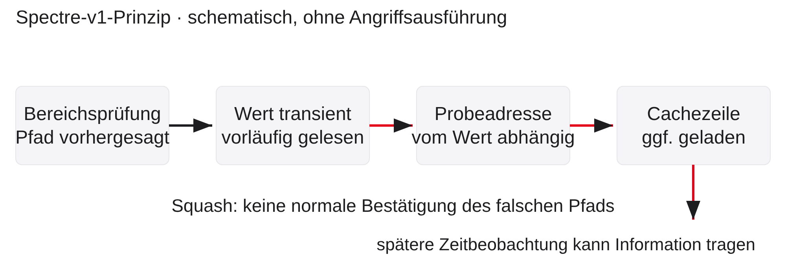
Verworfener Programmwert und beobachtbare Cache-Spur sind verschiedene Dinge.
Unterschiedliche Mechanismen brauchen passende Maßnahmen
| Spectre-v1 |
falsch vorhergesagter Pfad einer Prüfung |
| ursprünglicher Meltdown |
Berechtigungsprüfung auf betroffenen Designs |
Passende Barrieren, Maskierung und Speicherabbildung sind keine austauschbaren Universalrezepte.
Compiler und Hardware planen zu verschiedenen Zeiten
- Statisches Scheduling verändert die Übersetzung vor der Ausführung
- Dynamische Auswahl reagiert auf aktuelle Bereitschaft
- Beide müssen Werte und Nebenwirkungen erhalten
-O3 garantiert keine bestimmte Befehlsfolge und keine kürzere Laufzeit
Ausrollen und mehrere Akkumulatoren unterscheiden
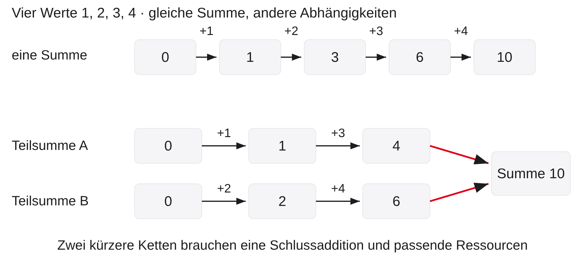
Ein größerer gerader Codeabschnitt entfernt nicht automatisch die RAW-Kette.
Übersetzung und Funktion sind eigene Nachweise
Vom Repository-Hauptordner:
gcc -std=c11 -O3 -Wall -Wextra -Werror \
labs/src/lab07_ilp.c -o /tmp/lab07_ilp
/tmp/lab07_ilp
Host-C prüft Summen; Compiler Explorer zeigt Befehle, kein OoO-Timing.
Abschlussquiz: Fenster, Version und Vorhersage nennen
- Zehn QuizAcademy-Fragen
- Zehn Minuten bearbeiten, fünf Minuten auswerten
- Bei jeder Entscheidung die benötigte Bedingung begründen
- Vergleichbare Antwortlängen, genau eine richtige Option
Was Sie jetzt erklären und prüfen können
- Pipelineüberlappung, Breite und Reihenfolge unterscheiden
- Wertabhängigkeiten und Registerversionen verfolgen
- Fertigstellung, Retire und Speicherwirkung trennen
- Vorhersage aus altem Zustand und ihre Kosten berechnen
- Compilerresultat, Modellzeit und Messung auseinanderhalten